Guía de uso de la plataforma de fichaje. Qué ve y qué puede hacer cada uno de los cuatro roles.
La plataforma la usan personas muy distintas: alguien que ficha con guantes puestos y alguien que cierra el mes de cinco empresas. Cada rol ve exactamente lo que necesita y nada más.
El trabajador y los paneles entran por caminos distintos, y es a propósito: muchos trabajadores no tienen correo de empresa, y pedirles una contraseña es garantía de que dejan de fichar.
| Quién | Cómo entra | Cuánto dura la sesión |
|---|---|---|
| Trabajador | Teclea el código de su empresa, se elige de una lista y marca un PIN de seis dígitos | Meses. En su propio móvil no vuelve a identificarse |
| Empresa y gestoría | Escribe su correo y recibe un enlace de acceso. No hay contraseña | Doce horas |
| Inspección | Token que genera la empresa o la gestoría, de un solo uso y con caducidad | Lo que se haya fijado, hasta 90 días |
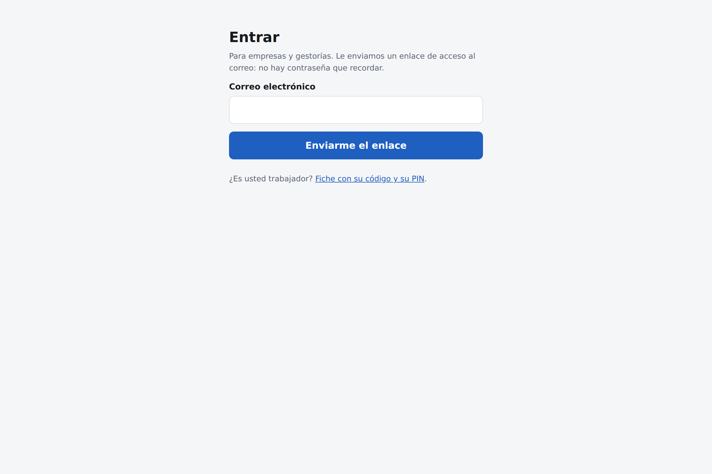
Es quien más veces al día abre la aplicación y quien menos tiempo tiene para entenderla. Toda la pantalla principal es un botón: sin menús, sin pasos intermedios y sin formación previa. Debe poder usarse con una mano y con guantes puestos.
Sólo se hace una vez por dispositivo. Después, la aplicación abre directamente en el botón de fichar.
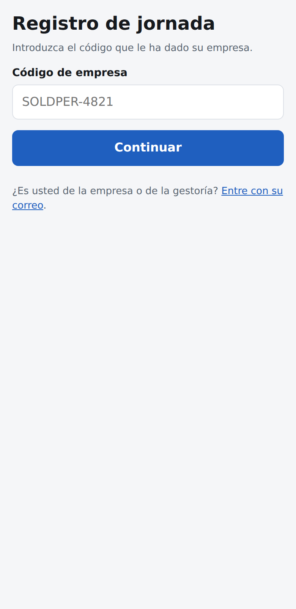
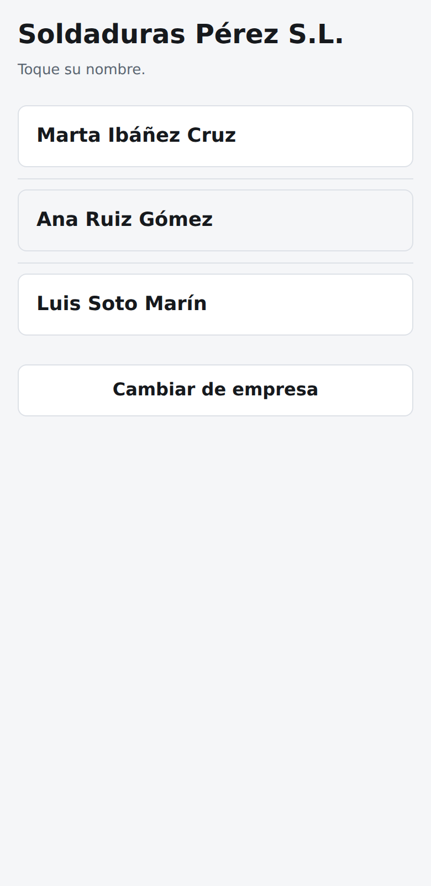
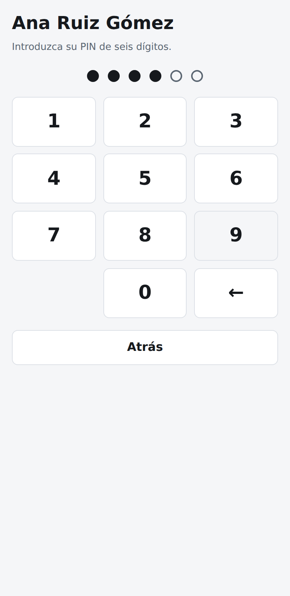
El botón cambia de color y de texto según la situación. No hay que elegir nada: lo que toca en cada momento es lo que pone el botón.
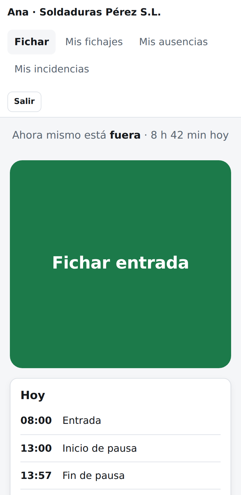
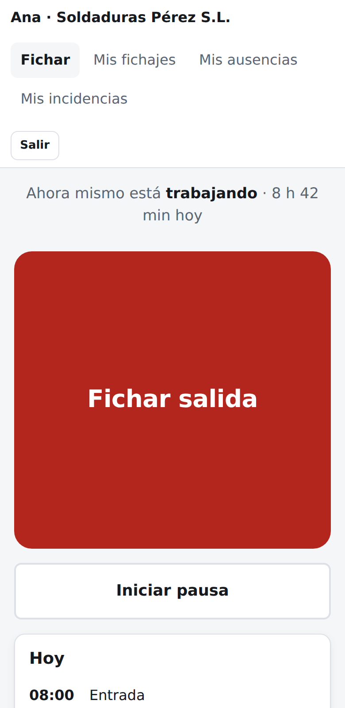
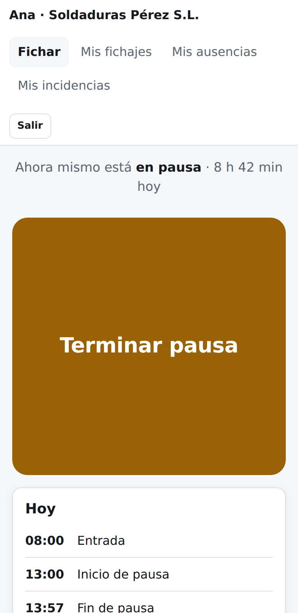
Debajo del botón aparecen los fichajes del día y los de los últimos días, para que el trabajador vea de inmediato que ha quedado registrado y no tenga que fiarse.
Cambiar la hora del teléfono no cambia el fichaje. El sello temporal lo pone siempre el servidor, en horario universal, y la zona horaria de la empresa se guarda aparte. Es lo que hace que el registro sirva como prueba.
En una nave con paredes de hormigón, quedarse sin línea no es un caso raro: es el caso de todos los días. La aplicación sigue funcionando.
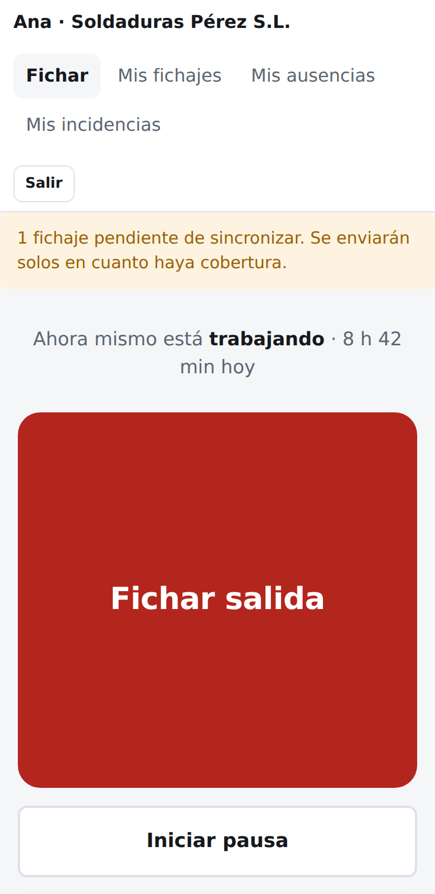
Se guardan las dos: la que declaró el teléfono y la de llegada al servidor. El registro queda marcado como diferido y pertenece al día en que se fichó, no al día en que se sincronizó. Un fichaje de las 22:00 que llega a las 00:10 sigue siendo del día anterior.
El trabajador ve su mes completo y puede descargarse su propio registro en PDF sin pedírselo a nadie. El artículo 34.9 le reconoce ese derecho de acceso, y hacerlo depender del jefe lo convertiría en un favor.
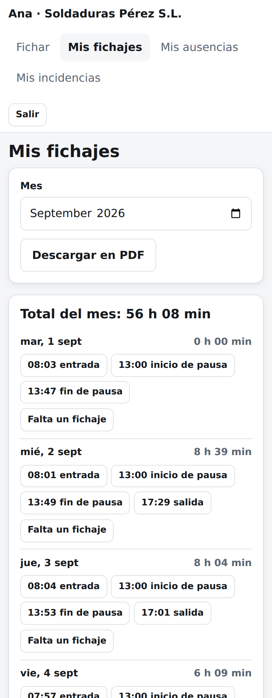
Quien aplica la corrección es la empresa o la gestoría. Y cuando la aplica, el fichaje original no se borra: se añade uno nuevo que lo corrige, dejando por escrito quién lo cambió, cuándo y por qué. Los dos quedan en la traza.
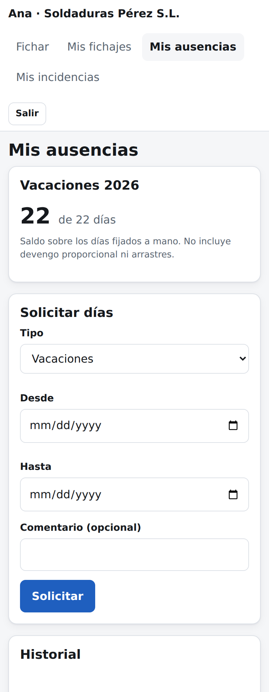
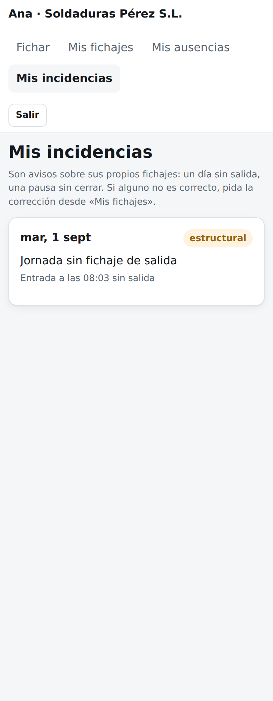
Es lo que hace que se corrijan solas: quien olvidó fichar la salida el martes lo ve el miércoles y lo arregla, sin que nadie se lo tenga que reclamar. Y es también lo que evita que el módulo se convierta en un panel de vigilancia, porque nadie ve las de los demás.
Los días anuales son un número que fija la empresa o la gestoría a mano. El sistema no calcula devengos proporcionales, ni antigüedad, ni arrastres del año anterior: eso depende de convenio y es justo donde se hunde un proyecto como éste. Sí descuenta fines de semana y festivos del calendario de la empresa.
Lo abre alguien que entra aquí una vez al mes, así que cada pantalla dice qué hace y ninguna acción queda sin explicar. La gestoría usa exactamente este mismo panel cuando entra en una de sus empresas: la cabecera lo indica con «vista de gestoría».
Es la pantalla de inicio, porque es la pregunta que se hace a diario.
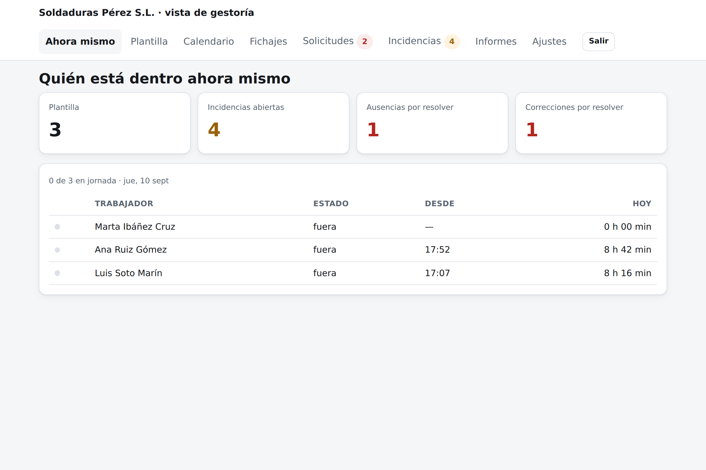
| Estado | Qué significa |
|---|---|
| trabajando | Ha fichado entrada y no ha fichado salida |
| Ha iniciado una pausa y no la ha cerrado | |
| fuera | No ha entrado hoy, o ya ha fichado la salida |
Alta, baja y edición de trabajadores. El PIN se asigna aquí y se le da al trabajador: se guarda cifrado y no se puede volver a consultar, sólo cambiar.
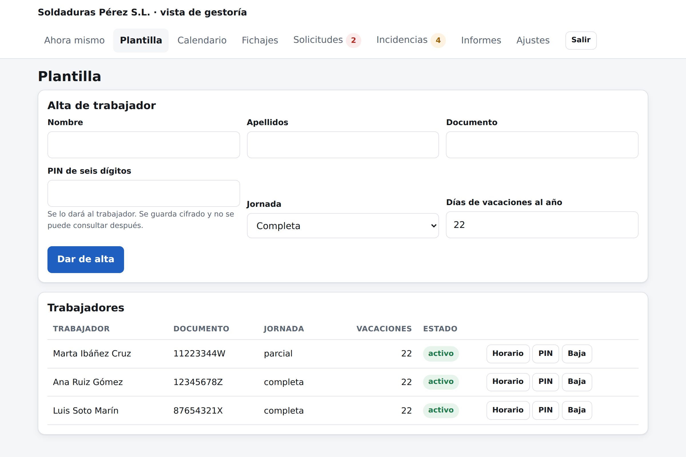
La conservación obligatoria es de cuatro años desde cada registro, y vale también para quien ya no está en plantilla. Dar de baja marca la fecha y saca al trabajador de las listas del día a día; sus fichajes siguen donde estaban.
Al cambiar el horario de alguien no se pisa el anterior: se le pone fecha de fin y entra el nuevo desde la fecha que se indique. Así los informes de meses pasados siguen cuadrando con el horario que de verdad regía entonces.
Festivos nacionales, autonómicos, locales y cierres de empresa. Lo rellena la gestoría, empresa por empresa y año por año.
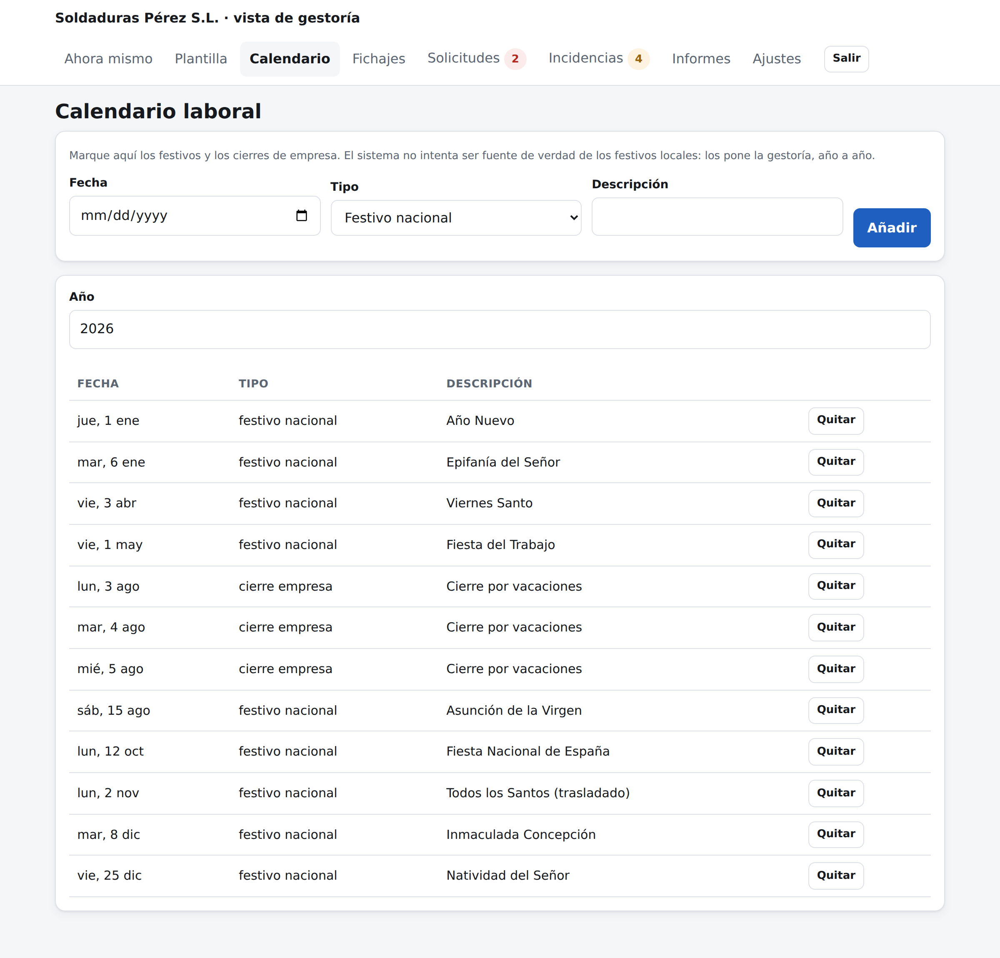
Para dos cosas: descontar los festivos de las horas teóricas del periodo, y callar al motor de incidencias. Un día marcado como festivo no genera ninguna alerta por falta de fichaje.
La rejilla del mes, trabajador a trabajador. Cada fichaje es un botón: al pulsarlo
se corrige o se anula. El botón + añade uno que falta.
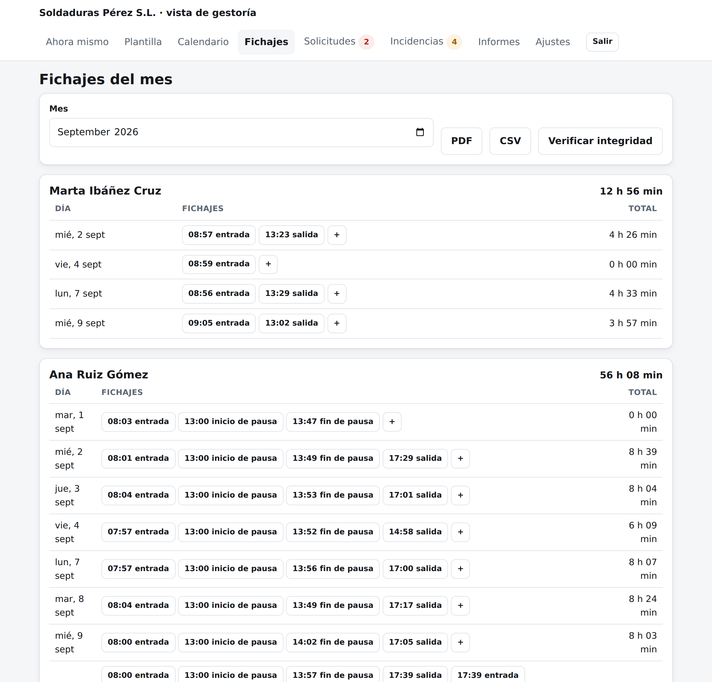
No es un campo opcional: sin motivo, la corrección no se guarda. Queda registrado quién la hizo, cuándo y por qué, y el fichaje original permanece visible. Es lo que diferencia una corrección de un borrado con otro nombre.
La bandeja: correcciones de fichaje y ausencias esperando respuesta. Es lo que marca en rojo el semáforo de la gestoría, porque significa que alguien espera.
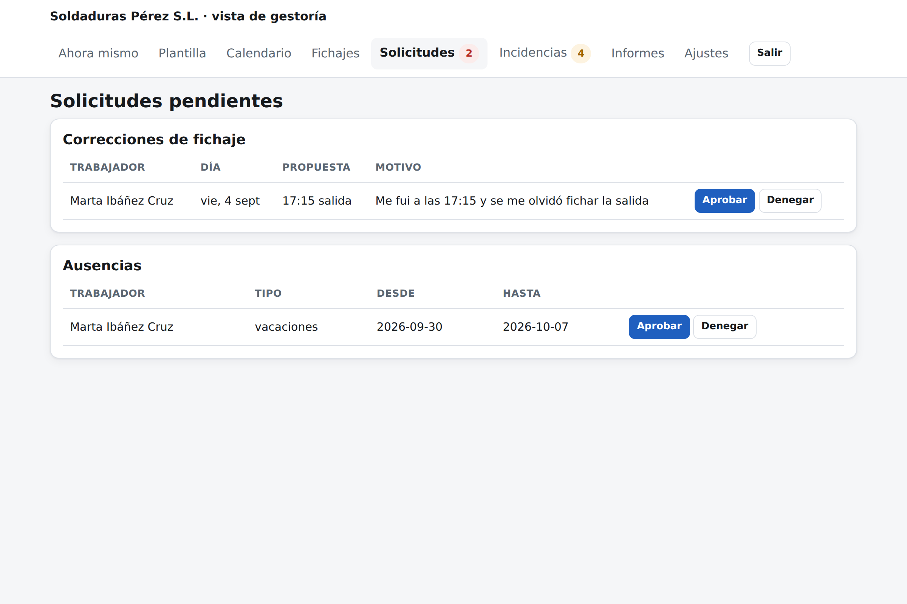
Es la funcionalidad que hace que el empresario abra la aplicación por voluntad propia en lugar de por obligación: detecta los problemas antes de preparar la nómina, no después.
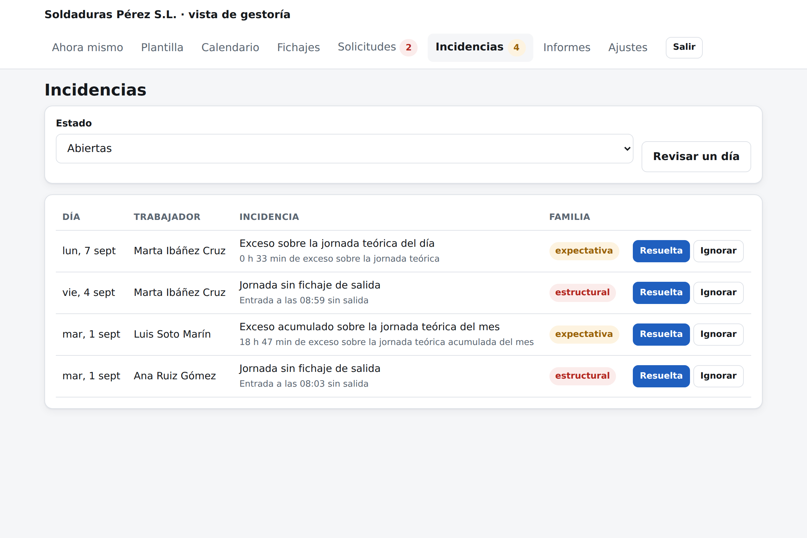
| Familia | Qué detecta | Qué necesita |
|---|---|---|
| estructural | Salida sin entrada · Jornada sin cerrar · Pausa sin cerrar · Jornada excesiva · Fichaje duplicado | Nada. Sale de los propios fichajes |
| Falta de entrada · Salida anticipada · Exceso sobre la jornada teórica, del día y del mes | Horario teórico y calendario |
Una. Hay una ventana de tolerancia configurable, veinte minutos por defecto. Una alerta que salta porque alguien llega tres minutos tarde se ignora en una semana, y arrastra consigo a todas las demás.
Dos. No se genera ninguna alerta de expectativa si ese día hay ausencia aprobada, es festivo del calendario de la empresa, o el trabajador está de baja. Nadie incumple un horario el día que tiene vacaciones aprobadas.
El motor pasa solo: cada quince minutos revisa el día en curso, y a las 23:50 hora local hace el cierre del día. Los avisos van por correo en un resumen diario, o inmediatos si la empresa lo prefiere.
Selector de periodo —mes, trimestre, semestre o año— con el desglose por trabajador y el total de la empresa. Se descarga en PDF para entregar y archivar, o en CSV para trabajarlo en la hoja de cálculo.
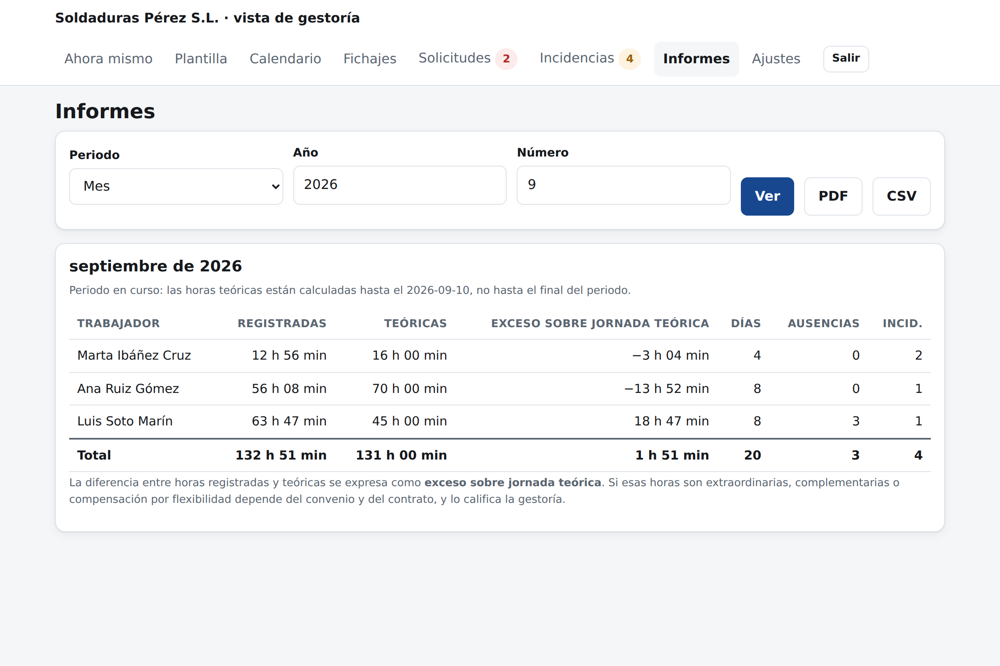
La columna se llama exceso sobre jornada teórica, y es deliberado. En el momento en que un sistema emite una cifra rotulada como horas extraordinarias está emitiendo un número que puede acabar en una papeleta de conciliación. Si esas horas son extraordinarias, complementarias o compensación por flexibilidad depende del convenio y del contrato, que la plataforma no conoce. La calificación la hace la gestoría.
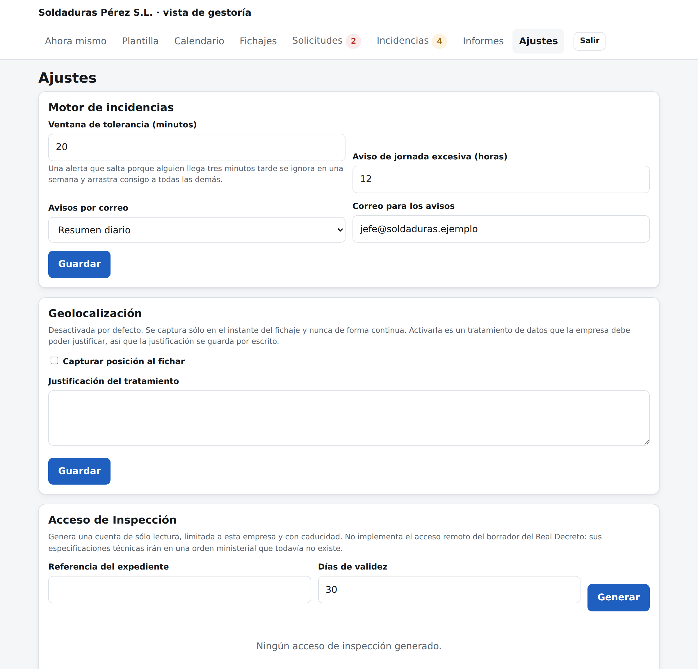
Si se activa, se captura la posición sólo en el instante del fichaje y nunca de forma continua. Activarla obliga a dejar por escrito la justificación del tratamiento: el formulario no deja guardarla en blanco. No hay biometría ni reconocimiento facial en ninguna parte de la plataforma, y no los habrá.
El panel transversal. Su criterio de éxito es concreto: que la gestoría cierre el mes de cinco empresas sin salir de aquí.
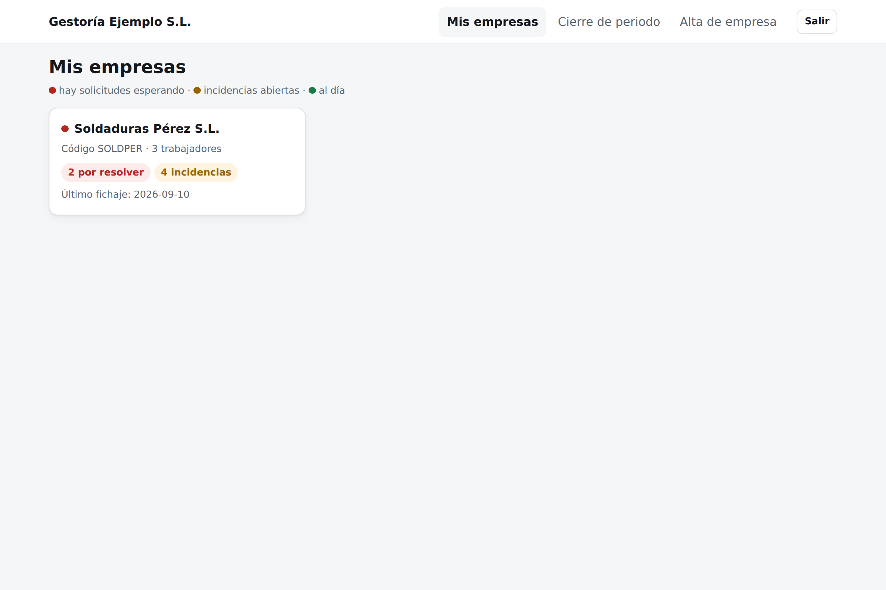
| Color | Qué significa | Qué hacer |
|---|---|---|
| rojo | Hay solicitudes sin resolver: correcciones o ausencias | Alguien está esperando respuesta. Va primero |
| Hay incidencias abiertas | Revisar antes de cerrar el mes | |
| verde | Ni solicitudes ni incidencias | Nada. El mes está limpio |
El orden de gravedad no es casual: una incidencia es un problema de datos, pero una solicitud sin resolver es una persona esperando.
Exporta el mismo periodo para varias empresas de una vez, en un único fichero consolidado con una línea por trabajador. Es lo que convierte el cierre de mes en una operación en lugar de cinco.
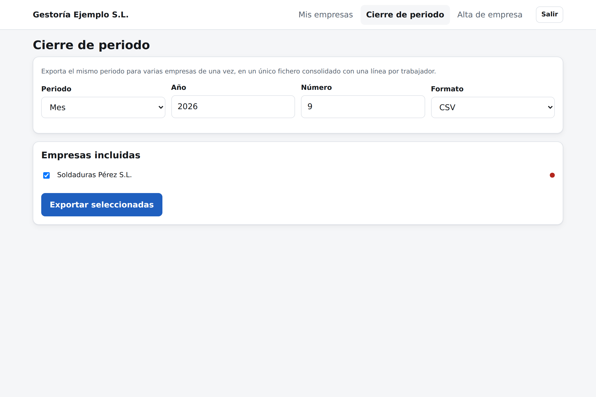
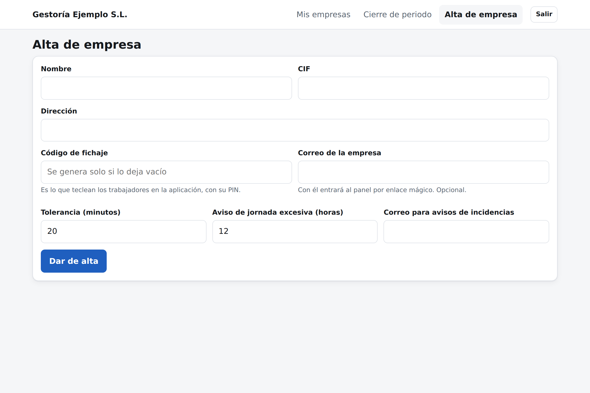
La ventana de tolerancia y el umbral de jornada excesiva se fijan aquí y se pueden cambiar después. El correo de la empresa es opcional: sin él, la empresa no entra al panel y todo lo lleva la gestoría, que es una forma perfectamente válida de trabajar.
No tiene pantallas propias, y conviene explicar por qué.
El Real Decreto que obligaría a formato exclusivamente digital no está publicado. Tuvo dictamen desfavorable del Consejo de Estado en marzo de 2026, se aplazó en julio y el Consejo de Ministros del 1 de septiembre no lo aprobó. Las especificaciones técnicas del acceso remoto de la Inspección irán en una orden ministerial posterior que sigue en fase previa.
No existe hoy ninguna certificación oficial de sistemas de fichaje. Cualquiera que afirme que su producto «ya cumple el nuevo decreto» no está siendo preciso.
No se puede implementar una integración que no tiene especificación. Lo que sí se ha hecho es dejar la puerta puesta, para que el día que salga la orden sea un módulo añadido y no una migración de cuatro años de histórico.
| Preparado | Para qué |
|---|---|
| Cadena de firmas | Cada fichaje va firmado con el anterior de su empresa. Es previsiblemente el núcleo de lo que exija la orden sobre integridad y no manipulación |
| Campos del borrador | Modalidad presencial o a distancia, naturaleza de la hora y totalización diaria y mensual ya existen en la base de datos, vacíos |
| Log de accesos | Quién consultó qué y cuándo, desde el primer día |
| Cuenta de inspección | Sólo lectura, limitada a una empresa y con caducidad. Un inspector puede entrar sin ver el resto de la plataforma |
| Exportación con adaptadores | Un envío periódico o una consulta remota serán un adaptador más |
«El sistema cumple lo que está vigente hoy: registro diario, conservación de cuatro años y puesta a disposición. Para lo que venga, la base de datos ya guarda los campos del borrador y los registros van firmados en cadena, así que la adaptación será un módulo añadido y no una migración. Va incluida en el mantenimiento.»
Seis decisiones que no aparecen en ninguna captura y que son las que hacen que esto aguante el cambio normativo que viene. Cuestan poco hoy y son carísimas de introducir con dos años de datos acumulados.
No es sólo que la aplicación no lo ofrezca: la base de datos lo rechaza. Corregir significa añadir un registro nuevo que apunta al original y guarda autor, motivo y momento del cambio. Anular, lo mismo. El original permanece siempre visible.
Cada registro guarda una firma calculada sobre la firma del anterior más sus propios datos. Alterar un fichaje de hace seis meses rompería la cadena de todos los posteriores, y el botón «Verificar integridad» lo señalaría. La cadena es por empresa, para que ninguna dependa de otra.
En horario universal, con la zona horaria guardada aparte. Nunca se confía en el reloj del dispositivo. El cambio de hora de marzo y de octubre está contemplado y probado.
El aislamiento no se aplica pantalla por pantalla, sino en la capa por la que pasan todas las consultas sin excepción. Una consulta que se olvidara del filtro no llega a ejecutarse: se rechaza antes.
Hoy hay dos formatos, PDF y CSV, y están versionados: un informe emitido hace un año se puede reproducir tal como salió. La futura integración con la Inspección será un tercer formato en esa misma lista.
Cuatro años desde cada registro, como exige el artículo 34.9 del Estatuto de los Trabajadores. Dentro de ese plazo no se borra nada, ni al dar de baja a un trabajador ni al dar de baja a una empresa.
Esta lista importa tanto como la de funcionalidades, y se dice en la venta, no cuando el primer cliente lo pida: